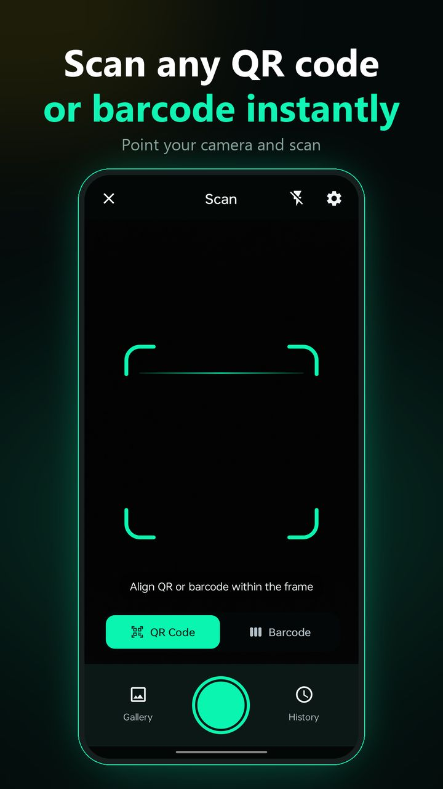
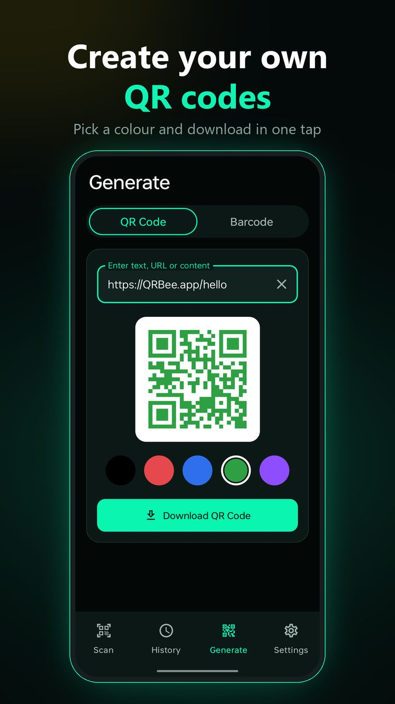

Quick answer: To scan a QR code on Android, open your camera, Google Lens or a scanner app like QRBee and point it at the code; the link or text appears on screen. To scan a QR code from a screenshot, open QRBee, choose scan from gallery and pick the image. Always check the link before opening it, and remember you never scan a QR code to receive money on UPI.
Key facts
- Scan with: camera app, Google Lens or a scanner app
- From a screenshot: scan from gallery
- Wi-Fi sharing: Settings → Wi-Fi → Share (Android 10+)
- UPI rule: scanning + PIN always sends money
- QRBee: scan, create QR codes and barcodes, history
Method 1: Your Phone's Camera
Many Android phones can read QR codes straight from the camera app or through Google Lens. Open the camera, point it at the code and tap the link that appears. Where and how this works depends on your phone brand and Android version.
Method 2: A QR Scanner App
A dedicated scanner app works the same way on every phone, reads barcodes too, and keeps a history of what you scanned. With QRBee:
- Install QRBee free from Google Play.
- Open the app and point the camera at the QR code or barcode.
- The result appears straight away. Turn on the flashlight in low light.
- Choose what to do: copy it, share it or open a supported link.
- Find it again any time in your scan history.
How to Scan a QR Code from a Screenshot or Photo
Someone sent you a QR code on WhatsApp, or it's in a screenshot? You can't point your camera at your own screen, but you can read it from the image:
- Save the image or take a screenshot of the QR code.
- Open QRBee and choose scan from gallery.
- Pick the image. QRBee reads the QR code in it, no camera needed.



Share Your Wi-Fi with a QR Code
Instead of spelling out a long Wi-Fi password, show a QR code. On Android 10 and newer, open Settings → Wi-Fi, tap your network and choose Share to show a QR code. Guests scan it and connect. You can also create your own Wi-Fi QR code in QRBee and download it to print for your home or shop.
QR Code Safety: 6 Rules
A QR code is just a link you can't read with your eyes. Scammers know this. Keep these rules in mind:
- 🔎Check the link before you open it. Look at the web address. Watch for misspelled brand names and strange domains.
- 🏷️Watch for stickers. In public places, a fake QR sticker can be placed over a real one, for example on parking meters or posters.
- 💸You never scan to receive money. In India, a common UPI scam asks you to scan a QR code to "receive" a payment. Scanning a payment QR code and entering your UPI PIN always sends money.
- 🔐Never enter your UPI PIN, OTP or passwords on a page you reached from an unknown QR code.
- 📦Be careful with app downloads. Install apps from Google Play, not from links in random QR codes.
- 🧾When paying a shop, check the name shown in your UPI app before you confirm.
🛡️ A good scanner shows you the result first and lets you decide what to do. In QRBee you see the scanned text or link before you choose to open it.
Create Your Own QR Codes and Barcodes
QRBee can also make codes. Create QR codes for links, text, contact details and Wi-Fi in the colour you like, or generate barcodes from text, then download them in one tap. QRBee has no accounts, and your scans and codes stay on your device unless you share them.
Frequently Asked Questions
How do I scan a QR code on Android?
Point your camera or a QR scanner app such as QRBee at the code. The link or text appears on screen, and you choose whether to open, copy or share it.
Can I scan a QR code from a screenshot?
Yes. In QRBee, choose scan from gallery and pick the screenshot or photo. It reads the QR code without the camera.
Do I need to scan a QR code to receive money on UPI?
No. You never need to scan a QR code or enter your UPI PIN to receive money. Doing that sends money. This is a common scam.
Can I make a QR code for my Wi-Fi?
Yes. Android 10 and newer can show a QR code for your Wi-Fi network, and QRBee can create a Wi-Fi QR code that you can download and print.
Scan Smarter
Scan QR codes and barcodes, scan from images and create your own. Free on Google Play.

Written by Kamal Kakkar
Founder of Yunok Tech and Android developer with 10+ years of experience at Nagarro and KareXpert, building apps for the healthcare and banking domains. Kamal also teaches Kotlin & Jetpack Compose.
LinkedIn → Medium → Android Course →